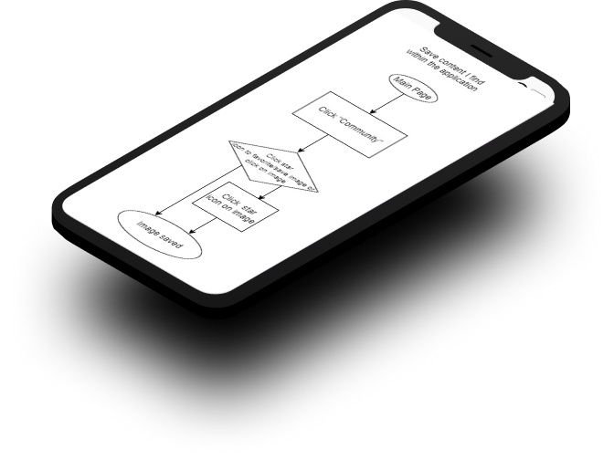

PHOTOSPHERE
Unique desktop cloud storage system for photographs.

my roles
SOLE UX | UI DESIGNER ON PROJECT
UX / UI Designer
Brand Developer
Visual Designer
Information Architect
Content Creator


PROBLEM
TOOLS
SOLUTION
When it comes to cloud storage, many users feel it is not specialized enough for photograph storage alone. Additionally, the client requested the ability to upload, save, organize, create, share, and collaborate.
Paper and Pencil
Draw.io
Usability Hub
Maze
Figma
InVision
Illustrator
Photosphop
The solution is Photosphere: a service specialized for the storage of photographs, which offers users the ability to upload, save, organize, create, share, and collaborate, as well as save content
within the site.
COMPETITIVE ANALYSIS
FLICKR, SMUGMUG, GOOGLE DRIVE
The SWOT analysis helped me to determine these companies strengths, weaknesses, opportunities, and threats. Some key takeaways that Photosphere could benefit from were:
• SmugMug offers a free trial for two weeks, then no free options. Photosphere will offer a great free option.
• SmugMug’s logo isn’t spectacularly memorable or strong. Photosphere will have a memorable, strong logo.
• Flickr’s icons do not have words to go along, which can be confusing. Photosphere’s icons will have words.
• Flickr autoloads when scrolling. Reaching the footer feels impossible. Photosphere’s interface will not autoload.
• Google Drive has strong, simple, and bold branding. Photosphere will have strong, simple branding as well.
• Google Drive is not specific to photography. Photosphere will be specific to photography.
If I were to do anything differently, I would analyze one last photography-specific site.
I would also try to tap into SmugMug’s portfolio-style presentation for professional photographers.
VIEW ANALYSIS
USER SURVEYS
THE USER COMES FIRST

With the help of my SWOT analysis results, I created a main user survey and a follow up survey to answer some main questions that I had about users cloud storage needs. Users stated that they were using cloud storage for both personal and professional purposes. In addition to that, they shared that their biggest frustrations were both sharing files and saving files.
VIEW ANALYSIS
user personas
NARROW FOCUS, REMAIN USER-CENTERED

Frank’s frustrations included multiple cloud services, but none specialized for photographs.
Nan wanted a cloud service that is easy to use and offered sharing/collaboration.
Sue was looking for a cloud service that offered real-time collaboration, and one that had more free options than SmugMug.
VIEW PERSONAS
user STORIES
NARROW FOCUS, REMAIN USER-CENTERED

With help of research and the three personas, I created user stories to determine which tasks would be vital for an MVP.
It was challenging to just focus on the high priority stories, but ranking them helped me to keep the scope of the project in mind.
VIEW STORIES
user flows
WHAT PAGES WOULD PHOTOSPHERE NEED?

User flows were created to show how users would realistically work their way through Photosphere. This helped me determine what pages the site would need to have and would not need, and helped me to create a sitemap for Photosphere as well.
VIEW FLOWS
lo-fi prototyping
WE HAVE A CLICKABLE PROTOTYPE!

From the flows, I began to sketch concepts for lo-fi wireframes. After sketching, I digitized all wireframes and turned them into a clickable prototype for first rounds of user testing. A huge problem that I encountered was that the navigation on my lo-fi wireframes was (as you can see) far too large.
VIEW LO-FI
USER TESTING
ROUND ONE
I tested three users - some remotely and some in person. This enlightened me to some issues surrounding the “Upload” function. After thorough testing and user feedback, I was able to make a plan for editing Photosphere further to relieve it of its kinks. Some notes from the analysis include:
• The organize aspect was lumped in with the upload option, which seemed a bit sticky and incomplete.
• The question was asked: How would one be able to move a photo between albums after uploading?
• Users had positive comments on the logo and visuals.
VIEW ANALYSIS
brand identity
MINDMAPPING, SKETCHING, VECTORIZING

At this point I began mindmapping, and finally came up with a name that suited the service: Photosphere. I selected a color palette that reflected the trustworthy, bright and sunny nature of the brand. And I began sketching a logo concept. After sketching, I used Adobe Illustrator to digitize many concepts. Through preference testing I was able to iterate further, and users helped Photosphere realize it’s perfect, final logo.
VIEW BRANDING
hi-fi mockups
CREATING THE ULTIMATE IN LOOK AND FUNCTION

I created high fidelity mockups to create an in depth, finessed version of Photosphere, for users to click through and accomplish the tasks required to produce the MVP. All icons, illustrations, and assets (aside from photographs) were created by me. This is something I would change in the future - it took a long time and I can utilize icon libraries next time for ease.
VIEW HI-FI
USER TESTING
ROUND TWO

I performed a second round of testing. Once again, I chose three users to test, and was glad to see that after thoroughly observing users flow through Photosphere’s hifi clickable prototype, the issues were mostly resolved. However, I was still able to receive vital feedback on the sign in user experience and interface to iterate one step further and smooth out Photosphere to be the best MVP it could be before launch.
VIEW ANALYSIS
CONCLUSION
WOULD I HAVE DONE THINGS THE SAME?
This project was incredible to direct from concept to interactive, high fidelity prototype. A big takeaway from working on this is that “Test early and often” is no joke. I would have started testing even earlier, and would have tested more. I learned that just because I can create all icons and assets from scratch, doesn’t mean that I should. Time is a big factor. I also learned that there is a resource online for almost anything. And that testing users is more than just listening to their words, but also reading their body language and
watching their process intensely.